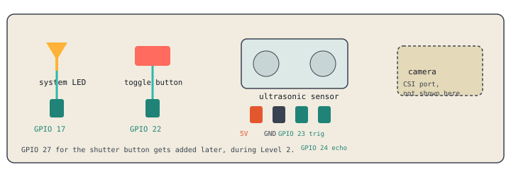

A booth that watches for someone stepping close, takes their photo automatically, and shows whether it's active with an LED.

CSI port, between the HDMI port and the audio jack. Silver contacts face the HDMI port, blue tab faces the USB/Ethernet side.
libcamera-hello
Confirm you see a live preview before writing any code.
from picamera2 import Picamera2
camera = Picamera2()
camera.start()
camera.capture_file("test.jpg")
Check with ls that test.jpg actually appeared.
Same wiring as Day 3: 5V, GND, trigger on GPIO 23, echo on GPIO 24.
from gpiozero import DistanceSensor sensor = DistanceSensor(echo=24, trigger=23) print(sensor.distance * 100)
from time import sleep
from datetime import datetime
while True:
cm = sensor.distance * 100
if cm < 30:
filename = datetime.now().strftime("photo_%H%M%S.jpg")
camera.capture_file(filename)
print("Captured:", filename)
sleep(3)
sleep(3) is a cooldown. Without it, one person standing there triggers dozens of captures per second, not one photo.Wire the LED to GPIO 17, and a button to GPIO 22, both with GND.
from gpiozero import LED, Button
led = LED(17)
toggle_button = Button(22)
system_on = True
def toggle_system():
global system_on
system_on = not system_on
toggle_button.when_pressed = toggle_system
while True:
if system_on:
led.on()
cm = sensor.distance * 100
if cm < 30:
filename = datetime.now().strftime("photo_%H%M%S.jpg")
camera.capture_file(filename)
sleep(3)
else:
led.off()
sleep(0.1)
window.after() here. Since this is a plain terminal program, not a Tkinter GUI, button.when_pressed quietly watches for the press in the background on its own, without freezing your while True loop. That changes once you add a GUI this afternoon.Camera captures a test photo successfully
Stepping within 30cm triggers an automatic capture
The cooldown prevents rapid-fire duplicate photos
The LED turns off when the toggle button is pressed, and capturing stops
Worksheet and Engineering Notebook filled in